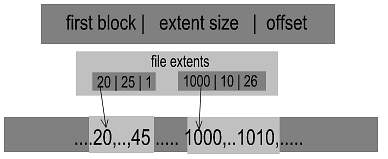
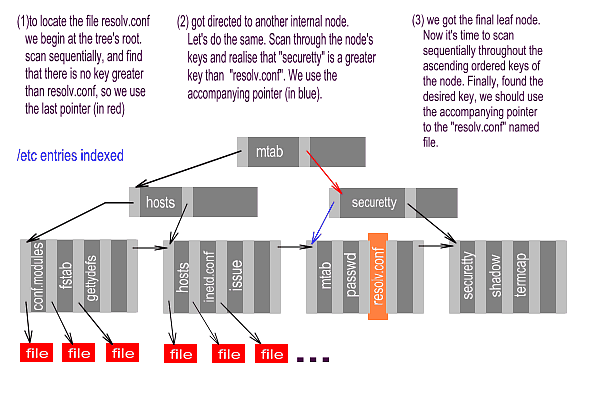

INTRODUCTION
As Linux grows up, it aims to satisfy different users and potential
situations' needs. During recent years, we have seen Linux acquire different
capabilities and be used in many heterogeneous situations. We have Linux
inside micro-controllers, Linux router projects, one floppy Linux distribution,
partial 3-D hardware speedup support, multi-head Xfree support, Linux
games and a bunch of new window managers as well. Those are important features
for end users. There has also been a huge step forward for Linux
server needs — mainly as a result of the 2.2.x Linux kernel switch. Furthermore,
sometimes as a consequence of industry support and others leveraged by
Open Source community efforts, Linux is being provided with the most important
commercial UNIX and large server's features. One of these features is the
support of new file systems able to deal with large hard-disk partitions,
scale up easily with thousands of files, recover quickly from crash, increase
I/O performance, behave well with both small and large files, decrease the
internal and external fragmentation and even implement new file system
abilities not supported yet by the former ones.
This article is the first in a series of two, where the reader will be introduced to the Journal File Systems: JFS, XFS, Ext3, and ReiserFs. Also we will explain different features and concepts related to the new file systems above. The second article is intended to review the Journal File Systems behaviour and performance through the use of tests and benchmarks.
The logical block is the minimum allocation unit presented by the file system through the system calls. That means that, storing fewer bytes than the logical block's within a file, would take a logical block's size of disk space to appear allocated. Therefore, if our block size doesn't divide a particular file (file size MOD block size != 0), the file system would allocate a new block that won't be completely full, causing a waste of space. That waste of space is internal fragmentation. Notice that the bigger the logical block is, the bigger the internal fragmentation should be.
External fragmentation is a situation in which logical blocks of a particular file are scattered all over the disk, causing operations over that file to be slower, since more hard-disk header movements are needed.
Extents are sets of contiguous logical blocks used by several file systems and even database engines. An extent descriptor is something like beginning, extent size, offset, where beginning is the block address where the extent begins, the extent size is the size in blocks, and offset is the offset that the first byte of the extent occupies within the file.

Extents enhance spatial locality, since the blocks within an extent are all contiguous. That increase will lead to better scan times, as fewer header movements need to be performed. Realise that using extents reduces the external fragmentation drawback, since more blocks are kept spatially together. But notice that extents usage isn't always a benefit. In case our applications request extents near in size to logical block's, we would lose the extents benefits, resulting in many small extents that would merely appear as logical blocks. To close the performance increase benefits, extents improve multi-sector transfer chances and reduce the amount of hard disk cache misses.
Finally, I would like you to realise that extents also provide for a way to organise large amounts of free contiguous space efficiently. Using extents will help us reduce the amount of disk space required to track free blocks, and will even enhance performance.

| B+Tree diagram: the leaf node's keys are ordered within the tree improving scan times, since the scan is no longer sequential. Leaf nodes are chained using pointers to each other. |
The B+tree structure has been used on databases indexing structures for a long time. This structure provided databases with a scalable and fast manner to access their records. B+tree stands for Balanced Tree. The + sign means that the Btree is a modified version of the original Btree, or more precisely, consists of maintaining pointers from each leaf node to the next, in order not to sacrifice sequential accesses. As Btrees and B+Trees have been inherited from database technology, we are going to use a database analogy to explain them.
The B+trees have two different types of nodes: the internal nodes and the leaf nodes. Both of them consist of sets of pairs like (key, pointer), ordered by the key value in an ascending manner and a final pointer which does not have a corresponding key. Whereas the internal node pointers are used to point to others' internal or leaf nodes, the leaf node pointers point to the final information directly. Every single pair's key is used to organise the information within the B+Tree. In databases, each record has a key field, a field where the value is used to distinguish that record from the same kind of records. Btrees take advantage of that key to index database records for better access times.
[In the diagram, the keys are file names. The bottom row above the red boxes contains a key for every file in the directory: these are the leaf nodes. Above these are the internal nodes, keys that have been chosen by the system to make finding other keys faster. -Ed.]
As we said earlier, an internal node pair (key, pointer) is used to point out either another internal node or a final leaf node. In both cases, the key that comes with the pointer will be greater than all the keys stored in the target node. Therefore, records with an equal key value to a certain pair's should be addressed by the next pair within the node. This is the main reason for a final pointer with no corresponding key to exist. Notice that once a key is used within a pair, there should be another pointer to address the records with that key value. That final pointer, is used in the leaf nodes to point to the next. That way, we can still visit the contents organised sequentially.
B+Trees also have to be balanced. That means the length of the path taking us from the tree's root to any leaf node should always be the same. Moreover, the nodes within a BTree must contain a minimum number of pairs in order to exist. Whenever a node's content gets below that minimum, the pairs contained would be shifted to another existing node.
In order to locate a specific record, we would do the following. Let's suppose we are looking for a record with a certain key, "K". We would begin at the root node, and then begin sequentially scanning the keys stored within. We scan throughout that node until we found a key that was greater than "K". Then we go to the node (internal or leaf; we don't know yet) pointed by the accompanying pointer. Once there, if we were taken to another internal node, we repeat the same operation. Finally, we get directed to a leaf node, where we scan sequentially until we found the desired key "K". As fewer blocks have to be retrieved to get the desired one, this technique is of lower complexity than sequential scanning, where in the worst case, we should visit all the entries.
The name of the file system SCO, System V and some other UNIXes used at the beginning. The Linux kernel includes optional support for UFS. Most UNIXes continue to use UFS, although now with custom minor enhancements.
A kernel layer that provides a unified application programming interface
for file system services, irrespective of which file system a file resides in.
All file system implementations (vfat, ext2fs, jfs, etc) must therefore provide
certain VFS routines in order to be usable under Linux. VFS is the kernel
layer that makes user applications able to understand so many different file
systems, even file systems that are comercial.
THE JOURNAL
I think we all know what a write cache is; a buffer allocated in the main memory intended to speed I/O operations up. This kind of buffer is commonly used in file systems — the disk cache — and databases to increase overall performance. The problem appears if there is a system crash, before the buffers have been written to disk, that would cause the system to behave in an inconsistent way after system reboot. Think of a file deleted in the cache, but remaining in the hard disk. That's why databases and file systems have the ability to recover the system back to a consistent state. Although databases have recovered quickly for years, the file systems and more precisely UFS-like ones tend to increase their recover time as file system size grows. The fsck recover tool for ext2fs has to scan through the entire disk partition in order to take the file system back to a consistent state. This time-consuming task often creates a lack of availability for large servers with hundreds of gigabytes or sometimes terabytes. This is the main reason for the file systems to inherit database recover technology, and thus the appearance of Journal File Systems.
Most serious database engines use what is called a transaction. A transaction is a set of single operations that satisfy several properties. The so-called ACID properties of transactions stands for Atomicity, Consistency, Isolation and Durability. The most important feature for our explanation is the Atomicity. This property implies that all operations belonging to a single transaction are completed without errors or cancelled, producing no changes. This feature, together with Isolation, make the transactions look as if they were atomic operations that can't be partially performed. This transaction properties are held on databases, due to the problems related to keeping consistency while exploiting concurrency. Databases take advantage of this, logging every single operation within the transaction into a log file. Not only the operation names are logged in, but also the operation argument's content before the operation's execution. After every single transaction, there must be a commit operation, making the buffers be written to disk. Therefore, if there is a system crash, we could trace the log back to the first commit statement, writing the argument's previous content back to its position in the disk.
Journal file systems use the same technique above to log file system operations, causing the file system to be recoverable in a small period of time.
One major difference between databases and file systems journaling is that databases log users and control data, while file systems tend to log metadata only. Metadata are the control structures inside a file system: i-nodes, free block allocation maps, i-nodes maps, etc.
UNIX File System (UFS) and ext2fs were designed when hard disks
and other storage media weren't as big in capacity. The growth in storage media capacity
led to bigger files, directories and partition sizes, causing several
file-system-related problems. These problems are a consequence of the internal
structures those file systems laid over. Yet, although those structures were adequate
for old files and directories' average sizes, they have proven inefficient
for new ones.
There are two major problems with old structures:
Most new file systems have widened their number of bits for some fields,
in order to overcome previous limitations. The new limits for those file
systems are:
|
|
|
|
|||||
|
|
|
|
|
||||
|
|
|
|
|
||||
|
|
|
||||||
|
|
|
Currently fixed 4KB |
|
||||
|
|
|
|
|
||||
Actually, the maximum block device size limits the file system size to 2Tb, and there is also a VFS limit of 2GB for file sizes. The good news is that we now have file systems able to scale up, and once the 2.4 kernels come out, I am sure the limits will be extended. Notice also that JFS and XFS are commercial file systems ports; they were designed for other operating systems where these limitations didn't exist.
Most file systems maintain structures where free blocks are tracked. The structures often consist of a list, where all the free blocks' numbers are kept. That way, the file system is able to satisfy the applications storage requests. UFS and ext2fs use what is called a bitmap, for free blocks tracking. The bitmap consists of an array of bits, where each bit corresponds to a logical block within the file system's partition. Each block's allocation state would be reflected in its related bit. Therefore, a logical "1" value could mean the logical block is being used, and a "0" could mean the block is free. The main problem with this kind of structure is that as the file system size grows, the bitmap would grow in size as well, since every single block within the file system must have a corresponding bit within the bitmap. As long as we use a "sequential scan algorithm" for free blocks, we would notice a performance decrease, since the time needed to locate a free block would grow as well (worst-case complexity O(n), where n is the bitmap's size). Notice that this bitmap approach isn't that bad when the file system size is moderate, but as size grows, the structure behaves worse.
The solution provided by the new-generation file systems is the use of extents together with B+Tree organization. The extents approach is useful since it can be used to locate several free blocks at a same time. Also, extents use provide a way to reduce the structure's size, since more logical blocks are tracked with fewer information. Therefore, a bit for each block is no longer needed. Furthermore, with extents use, the free block's structure size no longer depends on the file system size (structure size would depend on the number of extents maintained). Nevertheless, if the file system were so fragmented that an extent existed for every single block in the file system, the structure would be bigger than the bitmap approach's. Notice that the performance should be significantly increased if our structure kept the free blocks only, since fewer items had to be visited. Also, with extents use, even when they were organised into a list and sequential scan algorithms were used, the performance would be increased, since the structure would pack several blocks within an extent, reducing the time to locate a certain number of free blocks.
The second approach to overcome the free blocks problem is the use of complex structures that lead to lower-complexity scan algorithms. We all know there are better ways of organising a set of items that will need to be located later than the use of lists with sequential scan algorithms. The B+Trees are used since they are able to locate objects quickly. Thus, the free blocks are organised into B+Trees instead of lists, in order to take advantage of better scan algorithms. When several free blocks are requested by the applications, the file system would traverse the main "free blocks B+Tree" in order to locate the free space required. Also, there is a "B+Trees + Extents" approach, where not blocks but extents are organised within the tree. This approach makes different indexing techniques possible. Indexing by extent size, and also by extent position, are implemented techniques that make the file system able to locate several free blocks, either by size or by their location, quickly.
All file systems use a special fs object called directory. The directories, from the file system view, is a set of directory entries. These directory entries are pairs (i-node number, file name), where the "i-node number" is the number of the i-node — fs internal structure — used to maintain file-relevant information. Once an application wants to look for a certain file within a directory, given its file name, the "directory entries structure" needs to be traversed. Old file systems organised the directory entries within a directory into a list, leading then to sequential scan algorithms. As a consequence, with large directories where thousands of files and other directories are stored, the performance would be really low. This problem, as the one described with the free blocks, is tightly related to the structure used. New-generation fs need better structures and algorithms to locate files within a directory quickly.
Solution provided: The file systems being reviewed use B+Trees to organise the directory entries within a directory, leading to better scan times. In those fs, the directory entries for every single directory are organised into a B+Tree, indexing the directory entries by name. Thus, when a certain file under a given directory is requested, the directory B+Tree would be traversed to locate the file's i-node quickly. Also, new fs usage of B+Trees is file system dependent. There are file systems that maintain a B+Tree for each single directory, while others maintain a single file system B+Tree for the whole file system directory tree.
Some old file systems were designed with certain patterns of file usage in mind. Ext2fs and UFS were designed with the idea that the file systems would contain small files mainly. That's why the ext2fs and UFS i-nodes look as they do. For those of you who still don't know what an i-node is, we are going to explain the i-node structure briefly.
An i-node is the structure used by UFS and ext2fs to maintain file-dependent information. The i-node is where the file permissions, file type, number of links, and pointers to the fs blocks used by the file are maintained. An i-node contains some direct pointers that are pointers (block addresses) to a file system's logical blocks used by the file it belongs to. i-nodes also contain indirect pointers, double-indirect pointers and even a triple-indirect pointer. Indirect pointers are pointers (addresses) to blocks where other pointers to logical blocks are stored. Thus, double-indirect pointers are pointers to blocks that contain indirect pointers, and triple-indirect pointers are pointers to blocks containing double-indirect pointers. The problem with this addressing technique is that as the file size grows, indirect, double-indirect and even triple-indirect pointers are used. Notice that the use of indirect pointers leads to a higher number of disk accesses, since more blocks have to be retrieved in order to get the block required. This would lead to an increasing retrieval time as file sizes grow. You could be wondering why ext2fs designers didn't use direct pointers only, as they have been proven faster. The main reason is that i-nodes have a fixed size, and the use of only direct pointers would take i-nodes to be as big in size as the number of direct pointers that could be used, wasting much space for small files.
|
|
In order to minimise the use of indirect pointers, we could think of
using bigger logical blocks. This would lead to a higher information per
block ratio, resulting in fewer indirect pointers usage. But, bigger
logical blocks increase the internal fragmentation, so other techniques
are used. The use of extents to collect several logical blocks together
is one of those techniques. Using extents instead of block pointers would
cause the same effect as bigger blocks, since more "information per addressed
unit" ratio is achieved. Some of the reviewed file systems use extents
to overcome the large file addressing problems. Moreover, extents can
be organised within a B+Tree indexing by their offset within the file,
leading to better scan times. New i-nodes usually maintain some direct
pointers to extents, and in case the file needs more extents, those would
be organised within a B+Tree. In order to keep performance high when accessing
small files, the new-generation file systems store file data within the
i-node itself. Consequently, whenever we get a file's i-node, we would also
get its data. This is an especially useful technique for symbolic links,
where the data within the file is really small.
|
|
|
|
|
|
|
(small files) |
|
|
|
|
|
|
|
|
|
|
|
|
|
|
|
|
|
|
|
|
|
|
|
|
|
|
|
|
|
|
|
|
|
|
Ext3fs isn't a file system designed from scratch; it lies over ext2fs, so it doesn't support any of the techniques above. The point is that Ext3fs provides ext2fs with journaling support, while preserving backwards compatibility. | |||||||
(1) JFS uses a different approach to organise the free blocks. The structure is a tree, where the leaf nodes are pieces of bitmap instead of extents. Actually the leaf nodes are the representation of the binary buddy technique for that specific partition (Binary Buddy is the technique used to track and then collect together contiguous groups of free logical blocks, in order to achieve a bigger group). As we said when discussing the bitmap-based technique, every single bit on the bitmap corresponds to a logical block on disk. The value of a single bit could then be "1", meaning the block is allocated, or it could be "0", meaning the block is free. The pieces of bitmap, each of which contains 32 bits, could be understood as a hex number. Therefore, a value of "FFFFFFFF" would mean that the blocks corresponding to the bits on that sub-bitmap are all allocated. Finally, making use of that allocation number and other information, JFS builds a tree where a group of contiguous blocks of a certain size can be located quickly.
(2)This file system's core is based on B*Trees (an enhanced version of B+tree).The main difference is that every file system object is placed within a single B*Tree. That means there aren't different trees for each directory, but each directory has a sub-tree of the main file system one. That sort of use requires Reiserfs to have more complex indexing techniques. Another major difference is that Reiserfs does not use extents, though they are planned to be supported.
(3)ReiserFS organizes every file system object within a B*Tree.
Those objects, directories, file blocks, file attributes, links, etc.
are all organised within the same tree. Hashing techniques are used
to obtain the key field needed to organise items within a BTree. The best
of it is that by changing the hashing method applied, we are changing the
way the fs organises the items, and their relative position within the
tree. There are hashing techniques that help maintain spatial locality
for items related (directory attributes with directory entries, file attributes
with file data, etc.).
There are other limitations on "UFS-like" file systems. Amongst
these are the inability to manage sparse files as a special
case, and the fixed number of i-nodes problem.
Let's suppose we create a new file, and write a couple of bytes at the beginning. Everything is okay until then. What about if we now write at offset "10000" within that file? The file system should now look for as many blocks as needed to cover the gap between offset 2 and offset 10000. That could take a while. The question now is, why should the fs allocate those blocks in the middle, if we were not interested in them? The answer to that question is the sparse file support provided by the new file systems.
The sparse file support is tightly related to the extent addressing
technique for the file's blocks. The sparse file support takes advantage of
the field "offset within the file" of extent descriptors. Thus, whenever
the file system must look for free blocks just to fill the gap opened by
a situation like the one described above, the file system just sets up
a new extent with the corresponding "offset within the file" field. Thereafter,
whenever an application tries to read one of the bytes within the gap,
a "null" value should be returned, as there is no information there. Finally,
the gap would be filled in by other applications that wrote at offsets
within the gap.
When we discussed the internal fragmentation and file system performance, we said administrators often have to choose between performance and space waste. If we now look at the first table, we would see that new fs are able to manage blocks up to 64KB in size. That size of block and even smaller would produce a significant waste of space due to internal fragmentation. In order to make the use of big block sizes feasible, ReiserFS implements a technique that solves the problem.
As we said earlier, ReiserFS uses a B*Tree to organise the file system objects. These objects are the structures used to maintain file information — access time, file permissions, etc. In other words, the information contained within an i-node-, directories and the file's data. ReiserFS calls those objects, stat data items, directory items and direct/indirect items, respectively. The indirect items consist of pointers to unformatted nodes. Unformatted nodes are logical blocks with no given format, used to store file data, and the direct items consist of file data itself. Also, those items are of variable size and stored within the leaf nodes of the tree, sometimes with others in case there is enough space within the node. This is why we said before that file information is stored close to file data, since the file system always tries to put stat data items and the direct/indirect items of the same file together. Realise that opposed to direct items, the file data pointed by indirect items is not stored within the tree. This special management of direct items is due to small file support.
The direct items are intended to keep small file data and even the tails of the files. Therefore, several tails could be kept within the same leaf node, producing an important decrease of wasted space. The problem is that using this technique of keeping the file's tails together would increase external fragmentation, since the file data is now further from the file tail. Moreover, the task of packing tails is time-consuming and leads to performance decrease. This is a consequence of the memory shifts needed when someone appends data to a file. Anyway, the tails packing technique can be disabled if the administrator wants to do so. Consequently, it's once again an administrator choice.
One major problem of "UFS-like" file systems is the use of a fixed number of i-nodes. As we explained before, the i-nodes contain the information related to every file system object. Thus, a fixed number of i-nodes constrains the maximum number of objects that can be maintained within the file system. In case we used all the i-nodes of the file system, we would have to back up the partition, and then reformat with a higher number of i-nodes. The reason for this fixed number is that "UFS" uses fixed-size structures to track i-nodes state — the same manner as free blocks. Also, "UFS" allocates i-nodes at well-known positions for the file system, so no i-node to logical blocks mapping is needed. The problem appears when system administrators have to guess the maximum number of objects their file systems should manage. Notice that it is not always a good policy to create the biggest number of i-nodes possible, since the disk space needed for the i-nodes is reserved (can't be used for other purposes), and this would waste much space.
To overcome that problem, dynamic i-node allocation appeared. The dynamic
allocation of i-nodes avoids the need for system administrators to guess
the maximum number of objects at format time. But the use of dynamic techniques
leads to other problems: i-node to logical block mapping structures, i-node
tracking structures, etc. The file systems reviewed use B+Trees to organise
the allocated i-nodes of the file system. Furthermore, JFS uses "i-node
extents" that form the leaf nodes of the B+Tree and keep up to 32 i-nodes
together. There are also structures that help allocate i-nodes close
to other file system objects. Consequently, the use of dynamic i-node is
complex and time-consuming, but helps broaden old file systems' limits.
|
|
|
|
|
|
|
|
|
|
|
|
|
|
|
|
|
|
|
|
|
|
|
|
|
*(4) As we explained in "the ReiserFS internal fragmentation solution" section, ReiserFS makes use of stat_data items to store file-dependent information. The number of hard links, the file owner id, the owner group id, file type, permissions, file size, etc, are all stored within a stat_data item for the corresponding file. The stat_data item then replaces the inode's usage, except for the pointer to file blocks. Furthermore, the ReiserFS items are created dynamically and organised within the main file system B*tree, which leads us to dynamic inode allocation. Finally, every single file system item has a related key field, which serves to locate the item within the B*tree. This key has a number of bits at the end, dedicated to item-type identification and to let us know if the item is an stat_data, direct, indirect, etc. Therefore, we could say that inode organisation is performed by the B*tree usage.
*(5) Currently, ReiserFS sparse files support is not as fast as it was intended to be. This problem is scheduled to be fixed with ReiserFS release 4.
The author would like to thank Stephen C. Tweedie, Dave Kleikamp, Steve Best, Hans Reiser, the JFS and the ReiserFS mailing list guys for the fruitful conversations and answers.